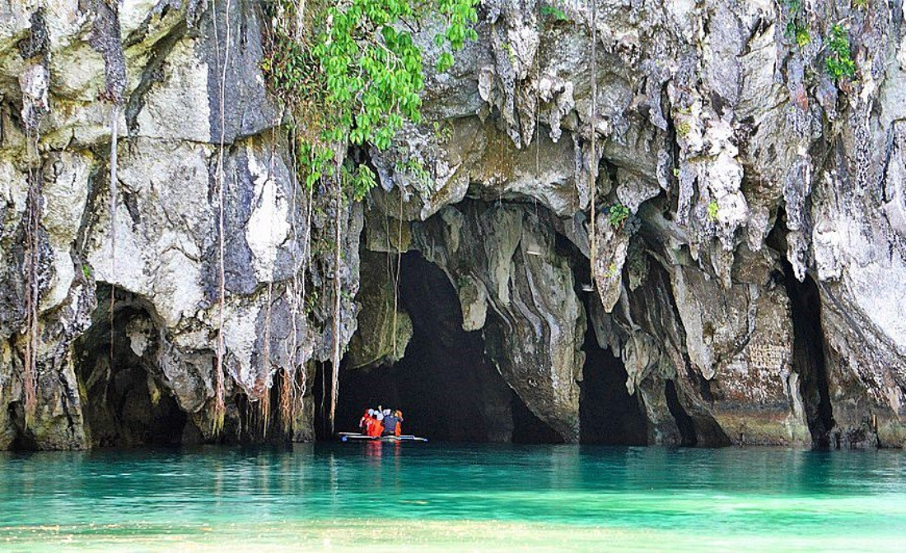
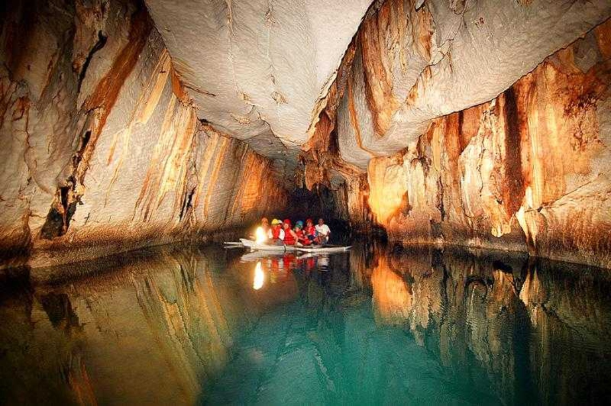

Puerto Princesa
Puerto Princesa is a calm city in Palawan with nature spots nearby. Many visitors come to see caves, coastal views, and local scenery that feels peaceful and refreshing.



Puerto Princesa is a calm city in Palawan with nature spots nearby. Many visitors come to see caves, coastal views, and local scenery that feels peaceful and refreshing.